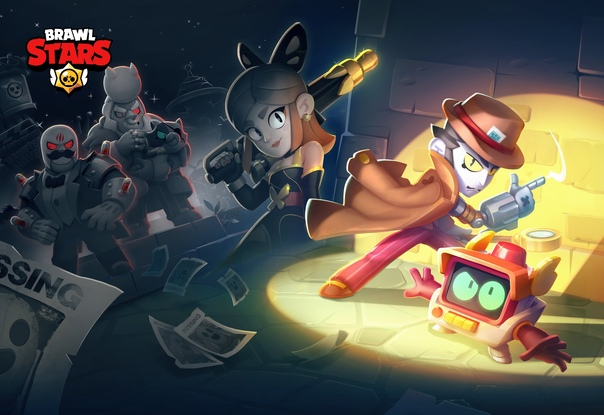

Brawl Stars
Гайд на Бравл Старс
В общем про Бравл Старс
Геймплей игры сосредоточен на том, чтобы в одиночку, командой из двоих человек или в кооперативе из троих или пяти человек победить команду других игроков, или противника под руководством ИИ, в разнообразных игровых режимах. Игроки могут выбрать персонажей, каждый из которых имеет свои навыки и суперспособность. Персонажей можно получить во внутриигровом магазине за кредиты, а гаджеты, звёздные силы и снаряжение — купив за монеты. В мае 2020 года в одном из обновлений игры была добавлена новая система наград под названием Brawl Pass. Когда игроки участвуют в сражениях, они зарабатывают жетоны, используемые для разблокировки уровней наград. Игроки могут получать кредиты, кристаллы, скины, значки (эмодзи, которые можно использовать во время баталий или в комнате командной игры), монеты, очки силы, спреи (специальные рисунки, которые можно оставлять на земле на поле боя) и бойцов. Существует три типа Brawl Pass: бесплатный и платный, а также Brawl Pass Plus, оба этих платных версий приобретаются за настоящие деньги.
Некоторые игроки в режиме одиночного столкновения применяют тактику временного объединения, при которой двое или более бойцов совместно стараются уничтожить всех остальных для увеличения своих шансов на победу. Несмотря на то, что чат в этом режиме недоступен, игроки разработали эффективный способ невербальной коммуникации. При виде потенциального союзника игрок предлагает объединиться, сделав несколько оборотов своим бойцом. Принятие предложения сигнализируется аналогичным способом. Похожая тактика наблюдалась также в Fortnite и PlayerUnknown’s Battlegrounds, что может свидетельствовать о её эффективности. Компания Supercell неоднократно признавала, что эта техника входит в противоречие с дизайном игры и раздражает остальных игроков, но выработать какого-либо эффективного механизма противодействия им не удалось.
